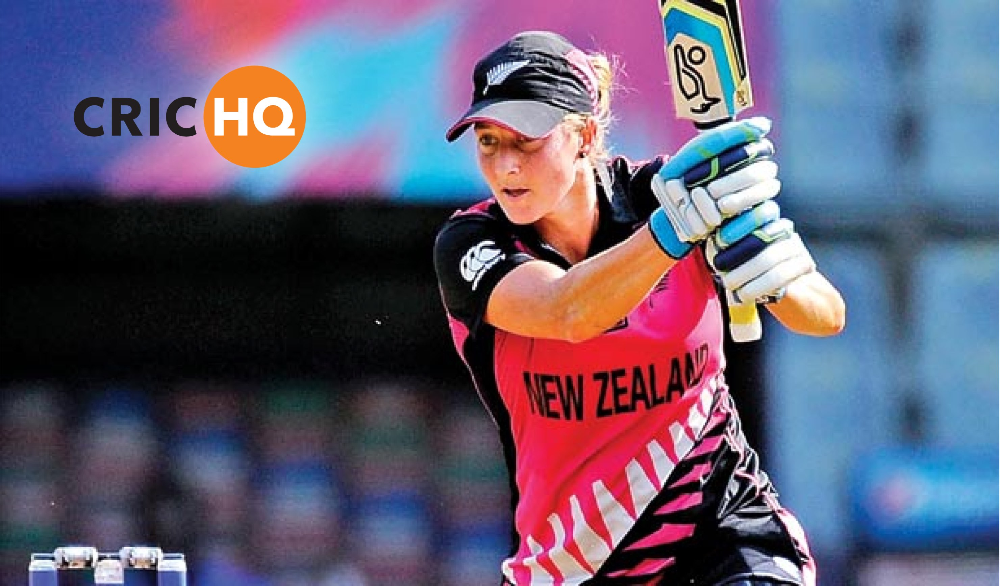

Right back to the drawing board.
Giving back to those who gave so much for us.
Scoring cricket matches in real-time.
There are many more projects I could highlight and expound upon, but the above should give you an idea of what I can do and how I do it as part of a talented team.
Below are some wonderful companies I've been privileged to work with (in alphabetical order):
© Andi Parker. All rights reserved.